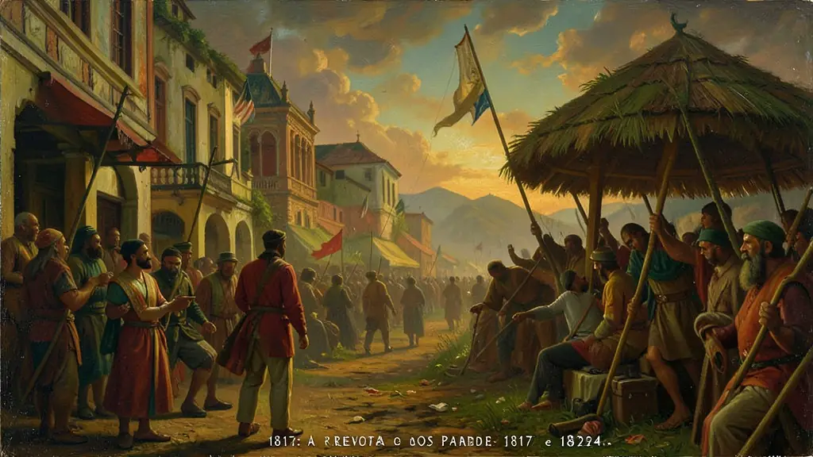
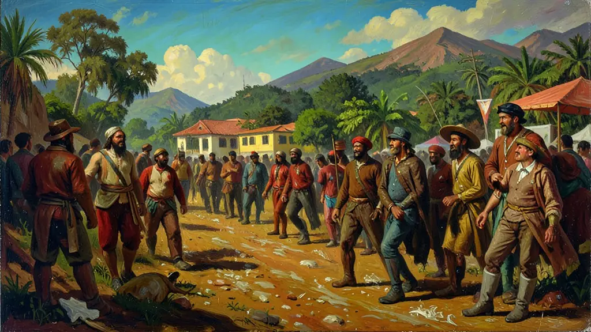
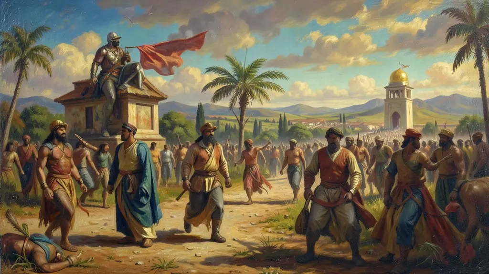

Capítulo 01
1. 1817: A Revolta dos Padres
Pernambuco estava cansado de sustentar os luxos dos nobres portugueses que fugiram para o Rio. Em 1817, padres, militares e maçons uniram-se sob as ideias da Revolução Francesa. Proclamaram a República, aboliram impostos sobre comida e convidaram outras províncias para a união. Foi uma revolução de intelectuais e soldados que provou que o Brasil já não aceitava ser colônia de fato.

Capítulo 02
2. Frei Caneca: O Mestre da Resistência
Joaquim do Amor Divino Caneca, o Frei Caneca, foi o maior herói de Pernambuco. Através do jornal 'Typhis Pernambucano', ele atacava o autoritarismo de D. Pedro I e o Poder Moderador. Caneca não era apenas um religioso, mas um teórico da política que defendia que o rei não podia estar acima da lei. Sua execução transformou-o em mártir eterno da liberdade brasileira.

Capítulo 03
3. Confederação do Equador: O Sonho de um Novo País
Em 1824, Pernambuco, Ceará, Paraíba e Rio Grande do Norte tentaram criar a Confederação do Equador. O objetivo era formar uma nação separada, baseada no modelo dos EUA, com voto mais amplo e sem o controle imperial. Eles rejeitavam a Constituição de 1824 imposta por D. Pedro I, que dava ao imperador o direito de anular as leis do parlamento.

Capítulo 04
4. Mercenários e Canhões contra o Recife
Para sufocar Pernambuco, D. Pedro I usou o dinheiro do tesouro brasileiro para contratar exércitos estrangeiros. Mercenários ingleses e franceses, sob o comando de lorde Cochrane, bloquearam o porto do Recife e bombardearam a cidade. A força bruta imperial venceu a vontade popular, mas deixou feridas que jamais cicatrizaram na relação entre o Nordeste e o poder central.
Capítulo 05
5. O Legado da Revolução no Nordeste
Pernambuco tornou-se o termômetro liberal do Brasil. Dessas revoltas nasceu uma cultura política de oposição radical. A bandeira de Pernambuco (de 1817) continua tremulando hoje como símbolo de que a luta pela democracia e pela república começou no Recife milênios antes dos livros de história darem crédito total ao Rio de Janeiro e São Paulo.
Pernambuco constituiu-se no grande núcleo do republicanismo e do separatismo radical durante os séculos XVIII e XIX. A Revolução Pernambucana de 1817 e a Confederação do Equador de 1824 demonstram o profundo descontentamento da elite e das camadas médias locais frente ao centralismo exacerbado do Rio de Janeiro e aos abusivos impostos joaninos.
Segundo Evaldo Cabral de Mello, essas revoltas evidenciam 'a outra independência': um projeto antilusitano e republicano diametralmente oposto à monarquia centralizadora bragantina que venceu nacionalmente. O movimento agregou maçons, padres libertários e proprietários de terra, em um caldeirão iluminista e revolucionário nordestino.
Para o Enem, entender as revoltas pernambucanas é compreender que o Estado Imperial não foi formado pacificamente. A repressão brutal contra figuras como Frei Caneca em 1824 expõe o caráter autoritário do Primeiro Reinado e a persistência do anseio por um federalismo autonômico.
Fonte: MELLO, Evaldo Cabral de. A Outra Independência: O Federalismo Pernambucano. Editora 34, 2004.
Atividades interativas
Questões para fixar
A Confederação do Equador (1824) foi um movimento separatista que eclodiu em Pernambuco. Qual era o seu principal motivo de indignação contra o Imperador D. Pedro I?
Frei Caneca, líder da Confederação do Equador, foi condenado à morte após o fracasso do movimento. Qual foi o destino final de sua execução?